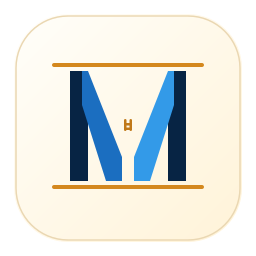

A1 · 路径绘制斜 #
多边形路径画斜 #
path 直接绘制倾斜四边形
不依赖 transform，精确可控
不依赖 transform，精确可控
A2 · 小号正 # 高位

256px
64px
32px
20px
紧凑正 #，靠上放置
2.5px 笔划 8×12px 小 #
放在 V 形开口最宽处
放在 V 形开口最宽处
A3 · 旋转斜 #
256px
64px
32px
20px
rotate(-8°) 替代 skewX
rotate 不产生水平错位
整体倾斜，边界可控
整体倾斜，边界可控